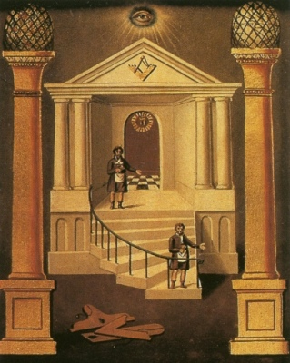

Sacred Texts Freemasonry
Buy this Book on Kindle
|

J. Bowring, Second Degree Board (Detail) [1819] (Public Domain Image) |
Symbolical Masonryby H.L. Haywood[1923] |
Symbolical Masonry is a treasure-house of Masonic lore, including discussions of key concepts of the first three degrees, along with an extensive study guide. Haywood goes into details about such mysteries as the Letter 'G', the two pillars, and the legend of Hiram Abiff. Not merely a rote discussion of the rituals and regalia of the lodge, Haywood attempts to get the reader to think critically about the background of these topics, enhancing their understanding of the rich history of Freemasonry.--J.B. Hare
Appendix: Questions for Discussion